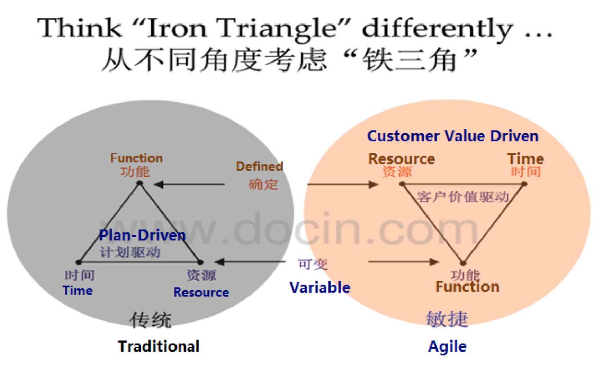
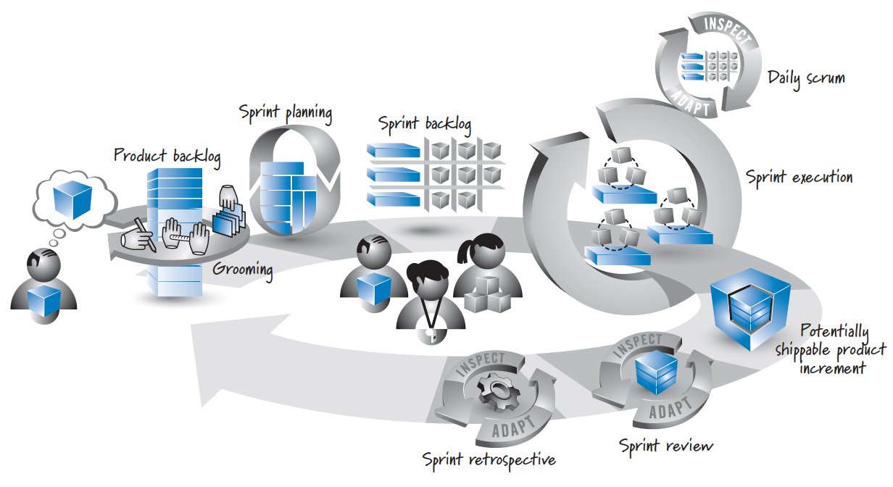
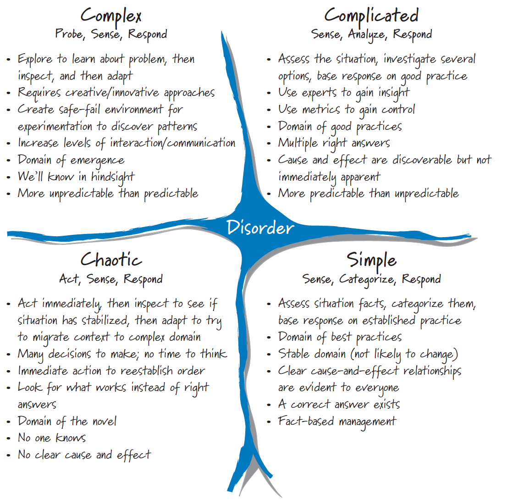
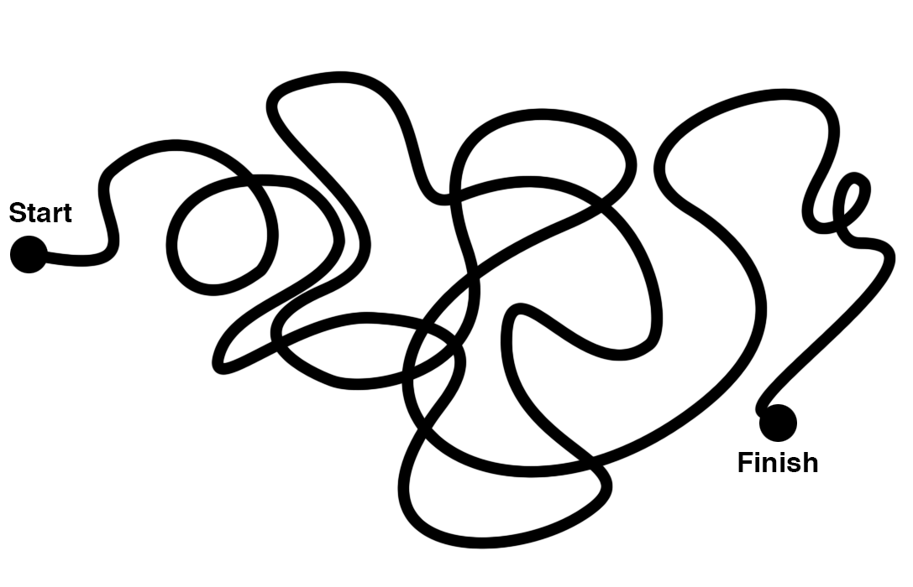
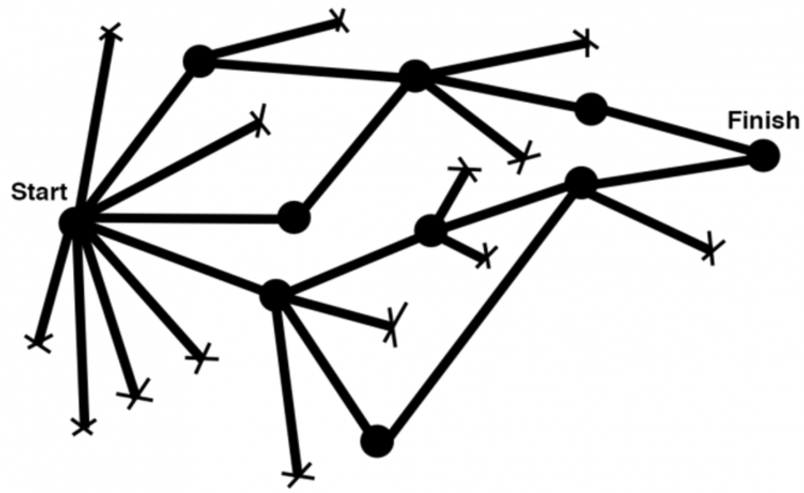
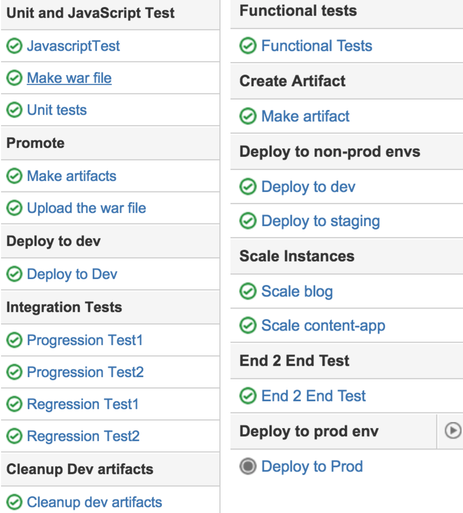

敏捷个人经验分享
周清 2020-03-10
破冰：简单介绍一个你知道的人?
Kent Beck, Mike Beedle, Arie van Bennekum,
Alistair Cockburn, Ward Cunningham, Martin Fowler
James Grenning, Jim Highsmith, Andrew Hunt
Ron Jeffries, Jon Kern, Brian Marick
Robert C. Martin, Steve Mellor
Ken Schwaber, Jeff Sutherland, Dave Thomas
概要
敏捷基础知识(20-30分钟)
敏捷实践经验(20-30分钟)
Q&A（0-10分钟)
敏捷软件开发宣言
个体与交互 高于 流程与工具
工作的软件 高于 详尽的文档
客户合作 高于 合同谈判
响应变化 高于 遵循计划
也就是说，尽管右项也有其价值，我们更重视左项的价值
敏捷 VS 传统
敏捷十二原则（一）
- 我们最重要的目标，是通过持续不断地及早交付有价值的软件使客户满意。
- 欣然面对需求变化，即使在开发后期也一样。为了客户的竞争优势，敏捷过程掌控变化。
- 经常地交付可工作的软件，相隔几星期或一两个月，倾向于采取较短的周期。
- 业务人员和开发人员必须相互合作，项目中的每一天都不例外。
- 激发个体的斗志，以他们为核心搭建项目。提供所需的环境和支援，辅以信任，从而达成目标。
- 不论团队内外，传递信息效果最好效率也最高的方式是面对面的交谈。
敏捷十二原则（二）
- 可工作的软件是进度的首要度量标准。
- 敏捷过程倡导可持续开发。责任人、开发人员和用户要能够共同维持其步调稳定延续。
- 坚持不懈地追求技术卓越和良好设计，敏捷能力由此增强。
- 以简洁为本，它是极力减少不必要工作量的艺术。
- 最好的架构、需求和设计出自自组织团队。
- 团队定期地反思如何能提高成效，并依此调整自身的举止表现。
Scrum框架
三角色 ，三工件 ，五事件 ，五价值
什么时候用SCRUM
一些特别的实践经验
Inception
Story Kick Off
Test Driven Development
Microservices testing
CI&CD
121 Feedback
Celebration for milestones
项目Inception
洞察与挖掘.产品愿景.业务背景.了解人
界面设计方案.用户体验地图.设计原型
技术方案.系统架构.开发视图.部署架构.技术栈.测试策略
实施方案.故事列表.MVP.迭代周期.交付计划
其他.角色职责.社会契约
关于故事卡启动
没有完美的故事卡，也没必要追求故事卡的完美
故事是程序员和其他角色沟通的基本要素
参与的角色：BA, DEV, QA
核心：各个角色对故事的理解是一致的
明确AC：区分做的事情和不做的事情
测试驱动开发
 微服务测试

CI&CD
反馈文化
鼓励一对一沟通
反馈沟通不应仅仅是告知，深层次目的是说服和激励
"情理三明治": 谈情、说爱、再说理